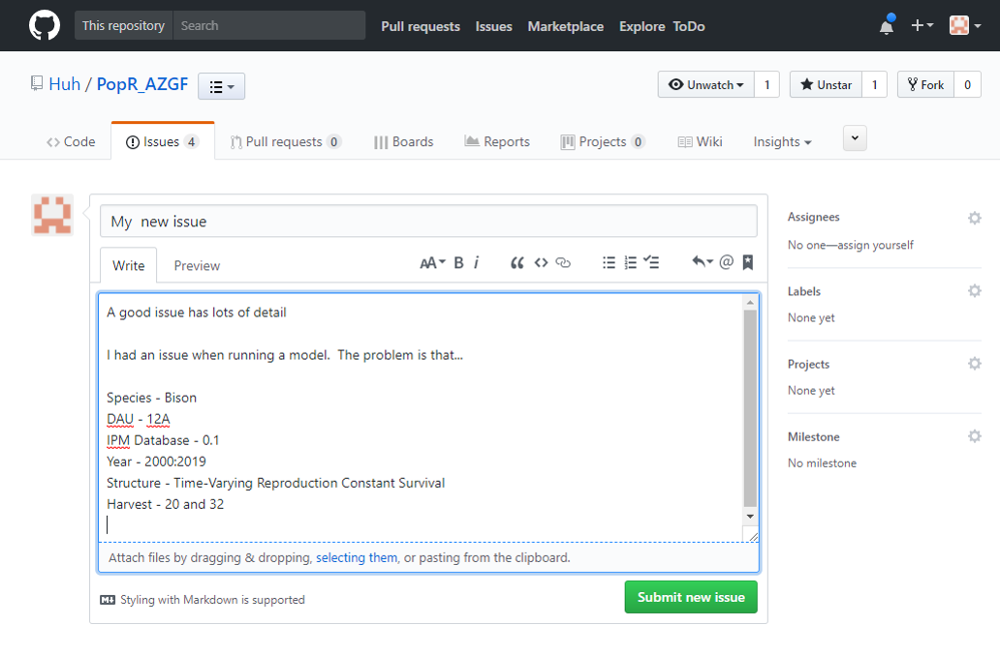

Issue Tracking & Feature Requests
PopR is linked to GitHub issue tracking. If you have a problem with your software or think of a new feature that would make your life easier the process of telling us about it is simple. While it might be easier to call or write an email we need a to do list in order to provide the service our collaborators deserve. This list of issues and features lets us assign tasks internally and generally manage projects effectively. If you choose to email or call we will create an issue anyway, but you won’t necessarily see our progress on the topic or conversations unless you go to the site and subscribe to or follow the issue. We highly encourage our users to try the Issue tracker. Those who have embraced these tools have found them very useful and provided glowing feedback. In addition, the public repositories that we maintain for each project also have a wiki that houses presentations and other supplementary materials.
GitHub
We use GitHub to keep track of versions of our code, back up the code base and facilitate communication. In order to use the tools provided by this amazing website each user needs to create an account. Accounts are free and relatively painless to create. To begin navigate to GitHub and click on the Sign up button at the top-right of your screen. Instructions for creating an account can be found here. If you prefer short videos (0:56 seconds) you might find this link helpful.
Issue Tracking
The official documentation for the issue tracker can be found here. Many of the features described in that documentation are not really necessary for our collaborators, but it might be advantageous to become a power user. For those wanting the official quick overview of the issue tracker the video below might be helpful.
What you need to know
- To begin navigate to the issue tab related to your project
- This page shows you all of the current issues and feature requests for your PopR website. There are also closed issues that you can view by clicking on the word Closed. Issues are organized by date to help you find what you are looking for. If you can’t find what you want you might try searching using the Filters or checking the Closed issues. You can also subset the issues by choosing an Author or Labels.
Looking for your issue page?
- Arizona
- CWD Monitoring
- Idaho
- Jasper National Park/Alberta
- Montana
- South Dakota
- WAFWA/Sage Grouse
- Wyoming
- Click on the new Issue Button
- When you click on the new Issue Button you will see a place to describe your issue.
- Describe your issue or idea
- The best practice when describing your problem or idea is to use specific details. An issue that simple says “website crashed” is not useful because we have no way of knowing what you were doing and so cannot reproduce the problem. If we can reproduce the problem we can fix it. If all user inputs and the issue are described there is a good chance that we can find the problem. Similarly, when describing a new feature please fully describe your vision, the problem it solves and why it is important so that it can be implemented as you imagine.

- Click Submit new issue
- Upon clicking the Submit button the whole Speedgoat team will be notified. We will respond as soon as possible to let you know we are aware of the issue.
What now?
Once you have submitted an issue you will be following that issue via email. Following or watching an issue means that you will receive an email each time something is posted about the issue. For example, you might receive a question asking for clarification or an explanation as to why the issue occurred. It is also likely that you will see the issue has been given labels and assigned to someone at SpeedGoat to fix or implement. If you would like to reply to a follow up question you can do so right from your email or you can view the issue on GitHub by following the link in the email.

Speedgoat Website: www.speedgoat.io